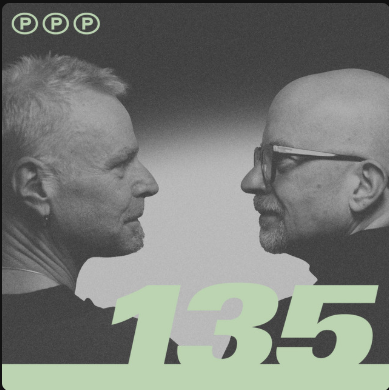

Kolumne
PPP Top 99: Wo ist mein Punk geblieben?
Oder: Wie eine Community sehr gute Arbeit leistet und trotzdem dringend zur musikalischen Nachschulung in den Keller muss.

Der befreundete Podcast PPP - Prost Punk, der Post-Punk-Podcast hat die Community nach den liebsten, besten und wichtigsten Songs der 80er gefragt. Ich durfte auch eine Liste einreichen.
Das war natürlich ein Fehler.
Denn wenn man mich nach den 80ern fragt, kommt am Ende nicht nur Nebelmaschine, Ledermantel und ernstes In-die-Ecke-Gucken raus. Da kommt auch ein Haufen Punk, Hardcore, Deutschpunk und musikalisches Fehlverhalten mit Schuhabdruck auf dem Tisch dazu.
Und dann kam das Ergebnis
99 Songs haben es in die finale Liste geschafft. Viele davon völlig verdient. The Cure, Joy Division, Depeche Mode, Sisters, New Order - alles gut. Wirklich. Ich bin ja kein Monster.
Aber dann schaue ich auf meine eigene Liste und frage mich: Wo zur Hoelle sind Descendents? Wo sind Slime? Wo ist Toxoplasma? Wo ist dieser notwendige Schlag mit der nassen Deutschpunk-Zeitung?
Zur Sicherheit für alle, die gerade nervös am Podcast-Regler drehen: Meine Empörung ist gespielt. Größtenteils. Also juristisch auf jeden Fall. Menschlich müssen wir nochmal reden.
Immerhin: Black Flag, Abwaerts und Circle Jerks haben es geschafft. Die PPP-Community ist also nicht komplett verloren. Nur stark beaufsichtigungspflichtig.
Meine Liste gegen das amtliche Endergebnis
Hier liegt der ganze Kram auf dem Tisch. Links meine Einreichung, rechts die Top 99 der PPP-Community. Treffer sind markiert. Sieben Stück. Sieben! Bei zwanzig Vorschlaegen! Das ist entweder ein Achtungserfolg oder ein kultureller Hilferuf.
Burgs 20er-Liste
- Descendents - I'm the One
- Bad Religion - Along the Way
- New Model Army - 51st State
- Slime - Deutschland muss sterben
- Kreator - Pleasure to Kill
- Depeche Mode - Ice Machine
- Philipp Boa - Kill Your Ideals
- Fury in the Slaughterhouse - Cry It Out
- The Adolescents - Amoeba
- The Cure - The Hanging Garden
- Bauhaus - She's in Parties
- Toxoplasma - Asozial
- Dead Kennedys - Holiday in Cambodia
- Black Flag - Rise Above
- Social Distortion - Mommy's Little Monster
- Abwaerts - Computerstaat
- Hass - Beton muss her
- Daily Terror - Schwarz-Rot-Gold
- Circle Jerks - Wild in the Streets
- The Damned - Alone Again Or
PPP Top 99
- The Cure - A Forest
- Joy Division - Love Will Tear Us Apart
- New Order - Blue Monday
- Depeche Mode - Stripped
- The Sisters of Mercy - This Corrosion
- The Sisters Of Mercy - Marian
- Killing Joke - Love Like Blood
- Visage - Fade To Grey
- The Sisters Of Mercy - Alice
- The Smiths - How Soon Is Now
- The Chameleons - Second Skin
- The Smiths - There Is A Light That Never Goes Out
- Phillip Boa & The Voodooclub - Kill Your Ideals
- Fehlfarben - Paul ist tot
- New Order - True Faith
- Tears For Fears - Shout
- Midnight Oil - Beds Are Burning
- And Also The Trees - Slow Pulse Boy
- Depeche Mode - People Are People
- The Cure - Charlotte Sometimes
- The Human League - Being Boiled
- Ramones - Pet Sematary
- Phillip Boa & The Voodooclub - Container Love
- Grauzone - Eisbaer
- Bronski Beat - Smalltownboy
- The Mission - Tower Of Strength
- Prince - Purple Rain
- New Model Army - 51st State
- Pixies - Monkey Gone To Heaven
- Kate Bush - Running Up That Hill
- Trisomie 21 - The Last Song
- Bauhaus - She's In Parties
- Liaisons Dangereuses - Los Ninos del Parque
- Depeche Mode - Shake The Disease
- Herbie Hancock - Rockit
- Front 242 - Headhunter
- The Cure - Play For Today
- OMD - Maid Of Orleans
- a-ha - The Sun Always Shines On TV
- The Sisters Of Mercy - Temple Of Love
- Depeche Mode - Everything Counts
- Dead Kennedys - Holiday In Cambodia
- Depeche Mode - Blasphemous Rumors
- Siouxsie & The Banshees - Spellbound
- Tears For Fears - Everybody Wants To Rule The World
- Joy Division - Atmosphere
- France Gall - Ella Elle L'A
- The House of Love - Shine On
- New Model Army - Green And Grey
- Pixies - Where Is My Mind
- The Church - Under The Milky Way
- Die Aerzte - Zu Spaet
- The Clash - Should I Stay Or Should I Go
- U2 - Sunday Bloody Sunday
- The Smiths - Bigmouth Strikes Again
- The Pogues - If I Should Fall From Grace With God
- Skinny Puppy - Assimilate
- Spliff - Deja vu
- Black Flag - Rise Above
- Propaganda - Dr. Mabuse
- Tears For Fears - Mad World
- Bauhaus - The Passion Of Lovers
- Queen & David Bowie - Under Pressure
- Nichts - Tango 2000
- Grandmaster Flash & The Furious Five - The Message
- Anne Clark - Sleeper In Metropolis
- Abwaerts - Computerstaat
- Depeche Mode - Never Let Me Down Again
- Trio - Los Paul
- The Smiths - Panic
- The Mission - Wasteland
- Talking Heads - Once In A Lifetime
- Depeche Mode - Strangelove
- Nik Kershaw - The Riddle
- U2 - New Years Day
- AC/DC - Back In Black
- DAF - Der Mussolini
- Nick Cave & The Bad Seeds - The Mercy Seat
- The Cure - Just Like Heaven
- The Police - Every Breath You Take
- The Specials - Ghost Town
- Falco - Rock Me Amadeus
- Madness - Our House
- Les Rita Mitsouko - Marcia Baila
- The Cure - Cold
- Circle Jerks - Wild in the Streets
- Simple Minds - Theme From Great Cities
- Yazoo - Nobodys Diary
- Soft Cell - Tainted Love
- Invincible Spirit - Push
- Malaria - Kaltes klares Wasser
- Yello - Desire
- Front 242 - Quiet Unusual
- PIL - This Is Not A Love Song
- Clan Of Xymox - Stranger
- Echo & the Bunnymen - The Killing Moon
- Einstuerzende Neubauten - Haus der Luege
- The Clash - Rock The Casbah
- The Communards - Don't Leave Me This Way
Fazit aus dem Keller
Ich gratuliere PPP und der Community zu einer Liste, die man sehr gut hören kann. Wirklich. Das ist ein schönes Ding geworden.
Trotzdem bleibt festzuhalten: Eine 80er-Liste ohne Descendents, Slime, Toxoplasma, Adolescents und Bad Religion ist wie ein kaltes Bier ohne Kronkorken. Man erkennt die gute Absicht, aber irgendwer muss jetzt mit dem Feuerzeug ran.
Also: Hört die Folge. Streitet über die Liste. Malt eigene Zettel voll. Und falls PPP demnächst eine Top 99 Punk-Liste macht, komme ich mit Helm.